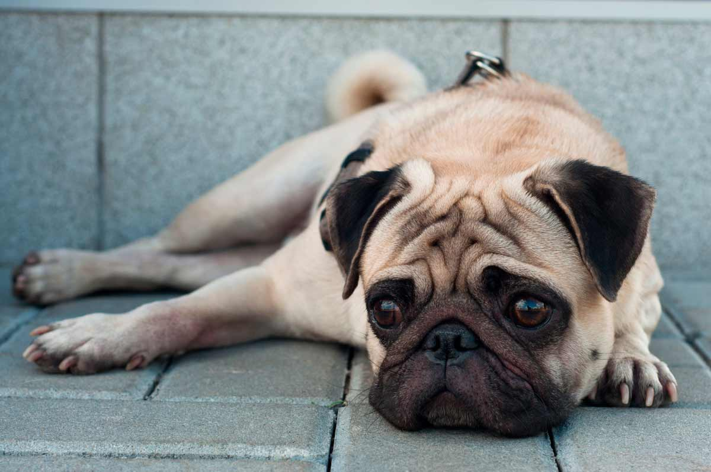

EL CARLINO O PUG

El Carlino es una raza de perro que se
destinaba a la realeza china ya en el siglo
VIII a.C., exclusivos para el emperador hasta
casi mil años después, cuando los mercaderes
holandeses comenzaron a comerciar con China en
la Ruta de la Seda, por la cual llegaron a Europa.
A lo largo de los siglos el aspecto del Carlino ha
ido cambiando, como el achatamiento de la nariz,
las patas se han acortado y la cola enroscado más,
atributos por los que son reconocidos estos perros actualmente.
Debido a ello, pueden sufrir golpes de calor y ahogarse
con frecuencia, como los boxer, ya que es una característica
común a todos los perros de razas braquicéfalas.